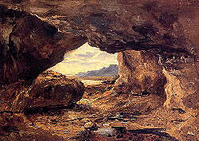

Literature
Caves in Books - Books about Caves
|  |
| Image: Theodore Rousseau (1831-1833) - The Cave in a Cliff near Granville. 1831-1833, 30.8cm x 42.55cm, oil on paper, mounted on canvas. |
A literature section on a website dedicated to caves and subterranea? Seems strange, but a close look on famous books reveals many relations to the underground. Caves and mines always affected man, and so many books use caves as an improtant scene of the story.
The first times caves were used this way was in mythology. In Greek mythology Zeus grew up in a cave. Later caves were the entrance to Hades, the realm of death. Then it was a place for devils and demons.
From the renaissance on, caves were again explored and people started to see them as a part of nature which could be explored. Literature changed too. Caves became he main topic of novels, e.g. Jules Verne (1864): Journey into the Interior of the Earth. Or they became the topic of scientific and touristic descriptions.
Classic Legends
Legends
 Legend: The Dragon Killer of Mixnitz, Austria
Legend: The Dragon Killer of Mixnitz, Austria- Legend: Fionn mac Cumhail
- Legend: Ossian
- Legend: The Cave of the Yellow Dog
Fiction
- Mark Twain (1876): The Adventures of Tom Sawyer
- David Strother (1857): The Adventures of Porte Crayon and his Cousins
- General Frederico F. Gavada (1870): The Cave Of Bellamar
- Johann Wolfgang von Goethe: The Seven Sleepers of Ephesus
- Ferdinand Gregorovius (1857): Monte Sant Angelo, from Wanderjahre in Italien
- Sabine Baring-Gould: various books
Scientific Reports
- Henry C. Mercer (1897): Cave hunting in Yucatan
- K. Macleay, M. D. (1811): Description of the Spar Cave
- E. A. Allen (1885): The Prehistoric World
- Charles Darwin (1859): On the Origin of Species
 The Disappearance of Little People Explained in German Legends,
translated and edited by E. Dale Wenger
The Disappearance of Little People Explained in German Legends,
translated and edited by E. Dale Wenger